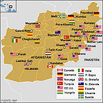

De: La Frikipedia, la enciclopedia extremadamente seria.
De: La Frikipedia, la enciclopedia extremadamente seria. De: La Frikipedia, la enciclopedia extremadamente seria.
| De la serie Países del planeta tierra: | |||||
| Agfanistan | |||||
|---|---|---|---|---|---|
| |||||
| Lema: Escondete del impío américano | |||||
| Himno: Un dos tres pollito inglés
| |||||
| 
| |||||
| Capital | Ramehra | ||||
| Mayor ciudad | Cráter 103 | ||||
| Lenguas oficiales | Chasquidos y ruidos guturales | ||||
| Gobierno | Talibanocracia. Cada 0.5 años se convierte en una Dictadura democrática de Power Rangers | ||||
| Talibán | Bin Laden | ||||
| Área | Asia | ||||
| Población | Es imposible saberlo | ||||
| Moneda | Cromos de Pokemon | ||||
| Zona horaria | Spain -24 | ||||
| Dominio Internet | .afg | ||||
| Código telefónico | 00tomahawk
| ||||
| Esta república dió a luz a uno de los seres que mejor saben esconderse. Se trata del Bien llamado Bin 500 leuros Laden. | |||||
País al norte de Somalia. Al este limita con Aldebarán y al oeste con la costa suroriental del Abismo del Fin del Mundo. Sus habitantes se denominan Dinosaurios. Son todos hermafroditas, y se dividen en diferentes etnias que jamás se entremezclan (pues dan como bástagos cadáveres).
La República Católica de Afganistán es el país donde se fabrican los productos de la marca de fotografía Agfa.
Situado al sur de Asia, Afganistán es una fértil tierra de verdes praderas de donde emanan caudalosos ríos que acogen una numerosa y rica fauna y flora. Desgraciadamente esto solo sucede en el 0.01% del país, siendo el resto un polvoriento desierto. lleno de petroleo talibanes, musulmanes, extremistas y zofilicos pastores que andan con sus esposas cabras por el desierto vendiendo y comprando ak 47 y ojivas
nucleares a los rusos
Los afganos siempre se caracterizaron por ser unos concienzudos trabajadores, que hacían horas extra gratis siempre que tenían oportunidad. Conformaban una economía exitosa con exportaciones de todo tipo de productos manufacturados de gran calidad y denominación de orígen hacia todo el mundo.
Afganistán era un pueblo tranquilo, pero debido a la emisión contínua de Gran Hermano en todas las cadenas, gran parte de los dinosaurios sufrieron embolias y fueron jubilados. Esto condujo a una menor productividad y de menor calidad. Muchos se dieron a las drogas, y se creó cierta cultura entorno a ellas, lo que sumergió la economía y obligó a imponer impuestos sobre ellas.
Tras un largo papeleo, el ingeniero dinosaurio Quimera, logró convencer a los políticos de que si instalaban SRASR (Sistemas de Reciclaje Altamente Sofisticados para Retretes) en todos los hogares podrían relanzar su economía y dar una imágen de éxito ante la Alianza de Civilizaciones. De esta forma su economía alcanzó un elevadísimo valor en bolsa y actualmente es uno de los paises más influyentes de occidente, con exportaciones a todo el mundo que suponen más del 99% del PMM (Peso de Mierda en el Mercado).
No obstante la idea no fué del todo aceptada por los somalíes folklóricos como Guerra Frígida.
Cada medio año el gobierno pasaba a manos de los parir. Transcurrido este tiempo el gobierno se retorna a los dinosaurios más jóvenes y se repite el ciclo.
En la actualidad se encuentra ocupado por el imperio del mal del presente. Sin embargo, se rumorea por los foros de Internet que será comprado próximamente por Aspaña, entregando al imperio del mal ni más ni menos que 400 leros, con lo que con tal de hacer que Zapatero tenga un bebé.
Una de las peculiaridades de Afganistán es que todos los varones llevan el nombre de Iván. Si preguntas quien es el carpintero, el fontanero o el panadero del pueblo, la respuesta siempre será la misma: Un tal Iván. Por eso es imposible mantener un censo de la población ya que el sistema informático creado por Hasecorp para ello, solo admite un nombre igual en la base de datos.
Otro rasgo del folclore afgano es que las mujeres llevan siempre un burka. Se trata de un bikini de último modelo, que enseña más que tapa, lo que suele ruborizar a los turistas y excitar a los lugareños.
Basada en exclusiva en la exportación de yerbas naturales (sobre todo opio). Pero los que han sido mas inteligentes han vendido petroleo a los gringos y estan creando bombas nucleares para vendérselas a los rusos
| |
|---|
| Afganistán • Arabia Saudita • Azerbaiyán • Bahrein • Bangladesh • Bután • Birmania • Brunéi • Camboya • Emiratos Árabes • Indonesia • Jordania • Kuwait • Kirguistán • Maldivas • Nepal • Omán • Qatar • Singapur • Sri Lanka • Tayikistán • Timor Oriental • Yemen |
Autor(es):